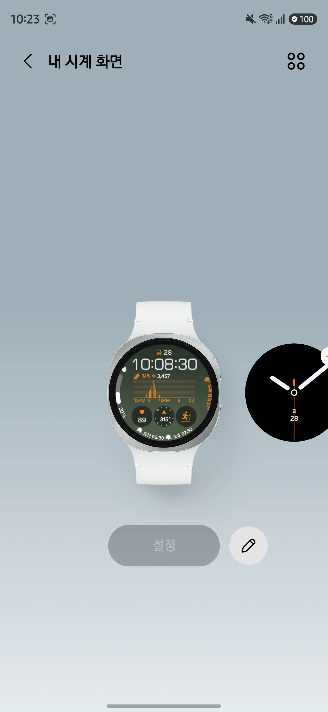
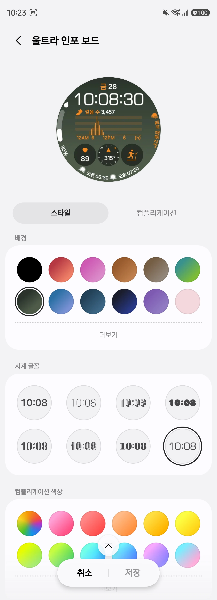
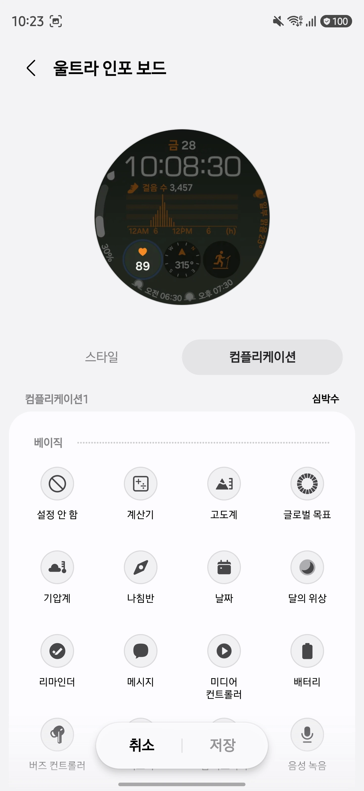
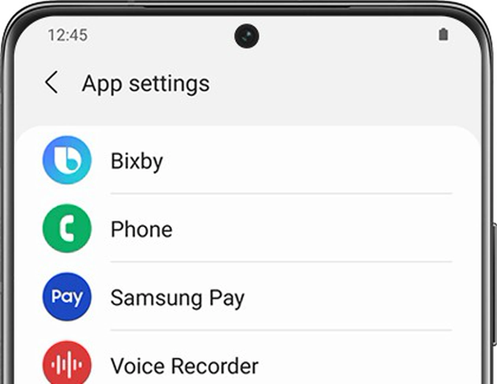

시계 화면·홈·기기 설정을 목적별로 분리해, 긴 기능 목록을 예측 가능한 구조로 바꿨습니다.Separated Watch Faces, Home, and Device Settings by intent, turning a long feature list into a predictable structure.
01 · CURRENT · CONNECTED PRODUCTS
Galaxy Wearable
One UI 9 Watch Manager의 전체 디자인을 맡았습니다. 시계 화면·홈·기기 설정의 3탭 구조를 설계하고, 탐색부터 개인화까지 주요 흐름을 직접 프로토타입으로 만들었습니다.I led the overall design of One UI 9 Watch Manager. I organized Watch Faces, Home and Device Settings into three tabs, and built working prototypes of the key flows from discovery to personalization.


01 · PRODUCT
여러 기기를 위한 하나의 폰 허브One phone hub for multiple devices
Galaxy Wearable은 Watch, Buds, Ring을 연결하고 관리하는 폰 앱입니다.Galaxy Wearable is the phone app for connecting and managing Watch, Buds and Ring.
Watch·Ring·Buds는 화면 크기와 입력 방식, 연결 절차가 서로 다릅니다. 하지만 사용자는 각 기기의 기술 구조를 학습하고 싶어 하지 않습니다. 필요한 기기를 찾고, 연결 상태를 이해하고, 설정을 바꾸고, 문제가 생겼을 때 다시 사용할 수 있기를 바랍니다.Watch, Ring, and Buds differ in display size, input, and connection flow. People should not have to learn each device’s technical structure. They need to find a device, understand its state, change settings, and recover when something goes wrong.
PHONEGalaxy WearableConnect · Configure · Manage
WATCH화면·앱·알림 설정Faces · apps · notifications
RING연결·상태·관리Connection · status · management
BUDS소리·제스처·업데이트Sound · gestures · updates
02 · LATEST DESIGN & PROTOTYPE
전체 구조를 설계하고, 주요 흐름을 직접 검증했습니다.I designed the structure and prototyped the key flows.
One UI 9 Watch Manager의 시계 화면·홈·기기 설정을 사용 목적에 따라 나눴습니다. 탐색과 직접 편집, 스타일·컴플리케이션 개인화는 실제 동작하는 프로토타입으로 만들어 제품·개발과 함께 검토했습니다.I separated Watch Faces, Home, and Device Settings by purpose in One UI 9 Watch Manager. Discovery, direct editing, and style and complication personalization were built as working prototypes for review with product and engineering.
실제 워치와 시계 화면을 중심에 두고 선택·추가·편집 결과를 같은 맥락에서 확인하게 했습니다.Kept the actual watch and face at the center so selection, addition, editing, and results stay in one context.
탐색에서 스타일·글꼴·색상·컴플리케이션 조정까지 깊어지되, 현재 상태를 잃지 않도록 구성했습니다.Let personalization deepen from discovery into style, type, color, and complications without losing the current state.



03 · PRODUCT EVOLUTION
Watch4 시기에서 One UI 9 Watch Manager까지.From the Watch4 era to One UI 9 Watch Manager.
Watch4 시기에는 기능별 설정을 세로로 탐색하는 구조가 중심이었습니다. One UI 9 Watch Manager에서는 시계 화면·홈·기기 설정을 분리하고, 실제 제품 상태와 자주 쓰는 행동을 앞에 배치했습니다.The Watch4-era experience centered on a vertical list of settings. One UI 9 Watch Manager separates Watch Faces, Home, and Device Settings, bringing the actual product state and frequent actions forward.
WATCH4 ERA기능이 이어지는 세로형 설정 구조A vertical structure organized by settings


ONE UI 9 WATCH3탭으로 목적을 나눈 관리 허브A three-tab hub organized by intent
01시계 화면Watch Faces탐색과 개인화를 독립된 공간으로A dedicated space for discovery and personalization
02Home기기 상태와 자주 쓰는 기능을 전면에Device state and frequent actions brought forward
03기기 설정Device Settings긴 설정 목록을 명확한 목적 아래 정리Long settings grouped under a clear purpose
04 · CONTRIBUTION
반복된 문제를 공통 기준으로 정리했습니다.Recurring problems became shared product criteria.
Watch4–Watch7을 거치며 연결, LTE 개통, 설정과 복구 등 출시 경험을 축적했습니다. Principal로 승격한 2024년부터는 기기별 과제를 개별 화면으로 풀기보다 상태·피드백·복구의 공통 기준으로 정리해 PM·개발·디자인이 함께 검토하도록 했습니다. One UI 9 Watch Manager에서는 이 기준을 전체 구조와 핵심 프로토타입에 반영했습니다.Across Watch4–Watch7, I worked through shipped connection, LTE activation, setup, and recovery flows. Since becoming Principal in 2024, I have turned those recurring problems into shared criteria for state, feedback, and recovery so product, engineering, and design can review decisions consistently. One UI 9 Watch Manager applies those criteria in its structure and key prototypes.
연결 전 기대를 분명하게Set expectations before connection
검색·권한·계정·업데이트가 왜 필요한지, 지금 무엇이 진행되는지 단계별로 설명합니다.Explain why discovery, permissions, accounts, and updates are needed—and what is happening now.
폰의 강점을 관리에 활용Use the phone where it is stronger
시계 화면, 앱, 타일, 알림처럼 작은 화면에서 복잡한 설정을 폰에서 빠르게 다루게 합니다.Move complex tasks such as faces, apps, tiles, and notifications to the phone’s larger, faster surface.
상태와 다음 행동을 함께Pair status with the next action
연결이 끊겼다는 사실만 알리지 않고, 영향과 해결 방법을 같은 맥락에서 보여 줍니다.Do more than report a disconnection: show its impact and the recovery action in context.
기기별 차이는 유지하고 원칙은 공유Respect device differences, share principles
Watch·Ring·Buds를 억지로 같은 흐름에 맞추지 않고, 정보 구조와 피드백 원칙을 일관되게 적용합니다.Do not force Watch, Ring, and Buds into identical flows; keep information structure and feedback principles consistent.
05 · ROLE & IMPACT
출시 경험을 다음 Watch Manager에 반영했습니다.Shipped experience informed the next Watch Manager.
Watch4–Watch7에서 반복해 다룬 연결·설정·복구 문제를 One UI 9 Watch Manager의 3탭 구조와 직접 조작 원칙에 반영했습니다.Recurring connection, setup, and recovery problems from Watch4–Watch7 informed the three-tab structure and direct-manipulation principles in One UI 9 Watch Manager.
Samsung Newsroom · Galaxy Watch9 & One UI 9 Watch ↗SamMobile · Galaxy Wearable redesign ↗